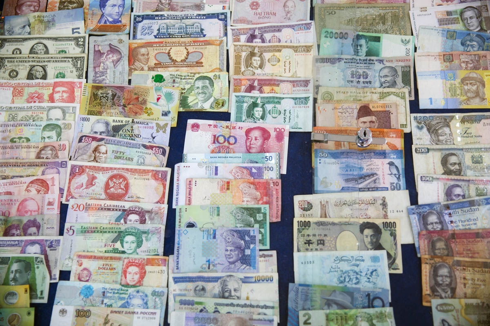
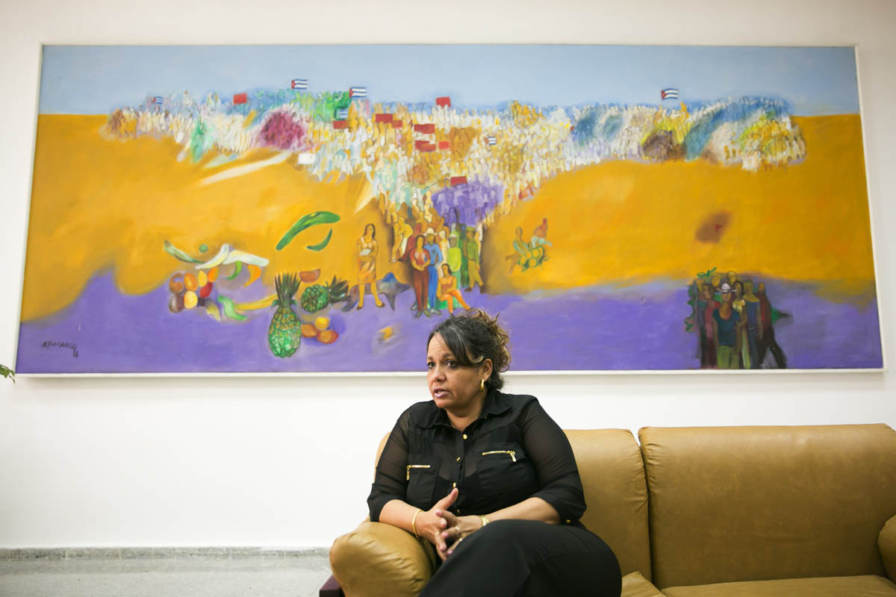
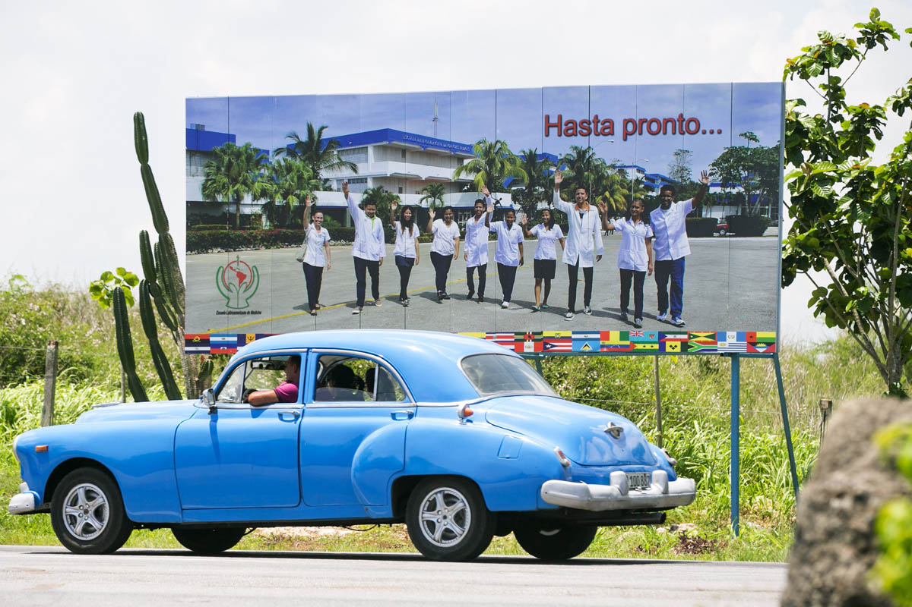

PLAYA BARACOA, Cuba —
Sol Bockelie, a 30-year-old medical student from Bremerton, has figured that the skills he needs are behind the last remaining curtain of the Cold War in the Western Hemisphere.
Bockelie and close to a hundred other U.S. students are enrolled in an international medical school founded in 1998 by then Cuban leader Fidel Castro to train doctors from the developing world.
Here they learn an approach to health care that has been recognized as equitable and cost-effective, emphasizing preventive medicine and the immersion of doctors in the communities they serve.
Dubbed the Latin American School of Medicine, or ELAM by its Spanish initials, the tuition-free program has so far graduated more than 25,000 doctors, mostly from relatively poor countries in Africa, the Middle East and Latin America.
Hundreds of Americans, too, have trained here with the aim of practicing medicine back home, the Cuban way — in underserved communities, focusing on family practice and prevention, making do when there aren’t a lot of resources available.
“I came here to understand what it means to be a Cuban doctor and apply it back home,” Bockelie said in an interview. That means becoming a “médico de ciencia y de conciencia” — a doctor endowed both with scientific know-how and a conscience, he says.
Bockelie’s journey highlights the lasting glamour of what’s perhaps Cuba’s proudest achievement, health care that outperforms that of some developed countries. That success contrasts with other legacies of Communist rule, including a weak economy and lack of freedoms other Western countries take for granted.
But the American cohort here is smaller than in previous years, a sign of how Cuba struggles to pay for utopian ideals while trying to refashion its failed economy.
The number of scholarships given by the Cuban government to U.S. students was cut in half a couple of years ago because of lack of money, according to Rachel True, director of Medical Education and Cooperation with Cuba, or MEDICC, an Oakland-based nonprofit that helps ELAM U.S. graduates practice at home.
“Cuba is facing a serious economic situation and ELAM is this wonderful amazing project,” True said. “But economically it may not be sustainable as they’re all completely free scholarships.”

As the U.S. mends ties with Cuba, Bockelie’s prospects showcase what Cuba’s bare-bones but effective health-care sector can teach its American counterpart.
In addition to posting stellar life-expectancy and infant-mortality rates, Cuba manages to do cutting-edge research in cancer vaccines and revolutionary diabetes treatments on a shoestring.
Some U.S. universities are interested. This year the medical school at Michigan State University was the first U.S. university since the Cuban revolution to send its students into Cuban hospitals.
While the hospitals are where “we were decades ago” and severely lacking in equipment, the Cuban health-care system is “good if not better than most Western countries, including the United States,” says Dr. Bill Cunningham, of Michigan State.
Bockelie, the son of a long-time Cuba solidarity activist, applied to ELAM four years after graduating from college, and didn’t consider U.S. schools.
“Cuba was what I wanted,” he said. Starting out Bockelie lived on campus, where students sleep in spartan dorms equipped with bunk beds. Now he pays for a room in the nearby town.
Bockelie intends to practice rural medicine a la cubana in Kitsap County, an area with medically underserved pockets, particularly among Native Americans.
But first he’ll have to overcome the obstacles all ELAM graduates face when returning to the U.S.
After devoting seven years to the ELAM coursework and hospital practice in Cuba, American students must pass certification exams at home. They also have to enter competitive residency programs whose directors may not be familiar with Cuban medicine, says Dr. Paul K. Drain, a University of Washington global-health professor who has studied the Cuban health system.
Dr. Drain has visited ELAM and says the school’s campus is “quite impressive” and the teaching “quite strong.”
But “some of the residency programs might say — what is this?” Dr. Drain said.
Some ELAM graduates in countries such as Costa Rica have had trouble getting their degrees recognized. ELAM officials blame protectionism or a misunderstanding of the school’s true goals.
“Sometimes people get confused and think this is a political project, but that is not the case,” said Dr. Heidi Soca Gonzalez, ELAM’s vice dean for academics, in an interview.
MEDICC’s True says normalization of U.S.-Cuba relations may make her organization’s goal of spreading the gospel of ELAM among residency programs easier.
“Maybe they’ll be more open to learning what Cuba actually has to offer,” True said.
One successful ELAM doctor opens doors for others. The Contra Costa Family Medicine Residency program in Martinez, Calif., took in Brenda Bondi-Boyd, a 2009 graduate now practicing family medicine in the area.
Bondi-Boyd “did really well. That made it easier to get the next person,” said Dr. Kristin Moeller, head of the residency program, which is now enrolling its fourth ELAM graduate.
Students leave school on the last day of finals before summer break at the Latin American School of Medicine, about 20 miles west of Havana. The school is in a former naval academy, hence the old watch tower.
ELAM lies some 20 miles west of downtown Havana in a massive former naval academy built when Soviet-backed Cuba feared a U.S. invasion.
The school was founded in the wake of hurricanes Mitch and Georges — which devastated Central America and the Caribbean — in order to train doctors from the afflicted countries. Some 3,000 students attend classes in the breathtaking, sea-facing campus.
During a recent visit, African, Latin and Middle Eastern youths streamed out toward a bus stop, bound for Playa Baracoa or bustling Havana.
Spanish, which nonnative speakers have to take for a year in addition to the standard six-year program, is the lingua franca. Other languages are spoken, too. “When you walk down the hallways, you hear Arabic, French, Laotian,” Bockelie said.
Dr. Soca, the vice-dean, says students from more than 134 countries have enrolled in the program.
Olas Nyanga, a 21-year-old student from the Republic of the Congo, said getting a degree from ELAM is “prestigious. Not only in Congo, but around the world.”
That said, living in Cuba, a country where most consumer goods are unaffordable to locals, is not easy. Besides room and board, ELAM students get a living stipend of 100 Cuban pesos, or about $4, a month. That can buy you two hours of internet access.
“Here there are hardships,” Nyanga said. “We depend on the state. When the state suffers, we suffer.”
Students spend a couple of years at the campus (nonnative Spanish speakers will have to add one extra year) and then move on to different hospitals.
The Cuban government pays the way for every U.S. student. Soca didn’t disclose how much it cost the Cuban state to bankroll the program, but she said foreign students usually pay about $80,000 to attend other medical programs in Cuba.
That means ELAM is an outsized investment for Cuba at a time when its own health-care sector is pinched.
Many doctors and nurses flee overseas, while some who remain drop out of the health-care system altogether for better-paying tourism jobs, such as driving taxis.
Cuban hospitals, especially outside the capital of Havana, have deteriorated. The Canadian government, in a travel advisory to its more than 1 million tourists visiting Cuba every year, reports that many Cuban hospitals are of “modest condition or in need of repair,” and may “lack basic drugs and equipment.”
Foreigners and Cubans familiar with the hospital system say that in many locations the conditions are critical.
Rooms can be dirty, waits long, and patients are required to bring their own medicine and even bedsheets. One person familiar with the workings of a hospital reported seeing syringes being sterilized for reuse instead of thrown away.
The hardship seems about to get worse as an oil subsidy from Venezuela is endangered by that country’s crisis.
ELAM has had to make cutbacks. True, the MEDICC director, says that the Cuban government used to offer scholarships for 27 or so U.S. students, but in the past two to three years the incoming groups have shrunk to between 10 and 15.
True says Cuba has struck deals with other countries that help pay for their citizens’ education at ELAM, but an existing U.S. embargo makes such a deal with America impossible.
When asked about the future of the ELAM program, Dr. Soca said that there was a steadfast commitment to training the world’s doctors. “One can never have too many doctors.” Cuba remains committed to training a global “white-coated army,” Soca said.

Americans began coming in 2001, in the wake of a visit to Cuba by a Congressional Black Caucus delegation. Cuba wanted to bring in U.S. students of mostly poor and mostly minority backgrounds.
Applicants are chosen by the Interreligious Foundation for Community Organization, a nonprofit that’s long supported Cuba.
For Bockelie, who majored in political science at the University of Washington, Cuba’s socialist approach was alluring. But the alternative to incurring hundreds of thousands of dollars of medical-school debt was welcome, too. “We’re debt-free when we’re done,” Bockelie said.
So far, 116 U.S. students have graduated from ELAM, including 12 who got their degrees in July, according to MEDICC. Of these, 65 have either finished or are completing a residency program in the U.S. A majority work in family medicine.
Those who haven’t been able to pursue a medical career in the U.S. have a variety of reasons, said True, the MEDICC director. Some decide to pursue a nonmedical career, while others move to other parts of the world, including earthquake-ravaged Haiti.
MEDICC offers financial support to pay for expensive U.S. licensing exams and online practice tests. True says 75 to 80 percent of ELAM graduates have passed the first licensing exam on their initial try.
That’s similar to students from other international schools, according to the U.S. Medical Licensing Examination website.
Dr. Mena Ramos, who finished her residency at the Contra Costa Medical Center and practices in the emergency department there, graduated from ELAM in 2011. She says her adviser at Brown University, where she got her undergraduate degree, was against her going. But if she had to make that choice again, ”I’d absolutely choose to go back to Cuba to study medicine,” she said.
Ramos said during her interviews at various residency programs, reactions varied from “ ‘Oh my gosh, it’s so cool, tell me more about it’ to ‘did you meet Fidel Castro?’ ”
Once in her residency, she found the toughest thing was to adapt to a system where patients come with various types of insurance that determine the coverage they get. She was also new to gun violence and substance-addiction cases. In Cuba, “I think I saw one case” of gun violence in six years, she said.

Bockelie, who just started his third year at the school, expects to graduate in 2021.
He says he is undaunted by the challenges posed by lacking in Cuba the same bells and whistles doctors have in the U.S.
“You acquire a level of creativity in this environment where you don’t have access to everything,” he said. <%= t.include("./_contact.html") %>